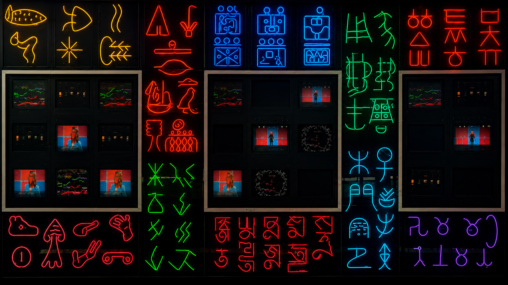

Obra analizada
PBS (1963–2000)
- Artista
- Nam June Paik
- Año
- 1993
- Tipo
- Instalación pública
- Ubicación
- NJN Building, Trenton
- Materiales
- Monitores, video y neón
- Escala
- 2 paneles / 52 monitores

(1963 – 2000)
Nam June Paik · 1993
PBS (1963–2000) · NAM JUNE PAIK
Elegí una pantalla para ver...
Obra analizada

Síntesis
PBS reúne televisores, luces de neón y signos de distintas escrituras en una estructura mural. La obra convierte el lenguaje de la televisión pública en una composición física, visible desde el espacio arquitectónico.
La lógica central es modular: cada monitor funciona como una unidad de señal, mientras el neón arma una capa de escritura luminosa alrededor de las pantallas.
Imagen de la obra
Imagen de la obra
Imagen de la obra
Marco conceptual reducido
Los monitores operan como unidades independientes dentro de una estructura común.
La obra no se mira desde un único punto: se recorre con el cuerpo y con la mirada.
Televisión, escritura y neón se traducen entre sí como capas de comunicación.